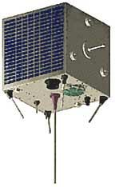
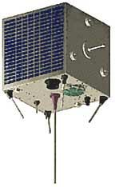
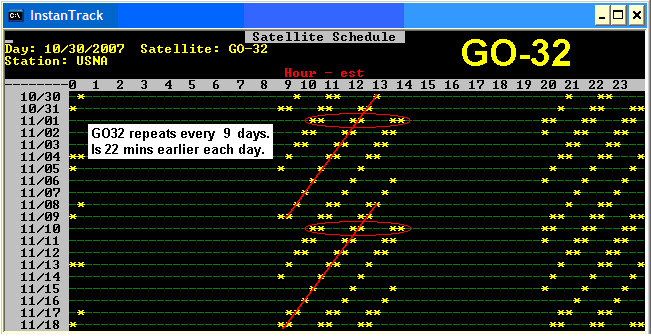
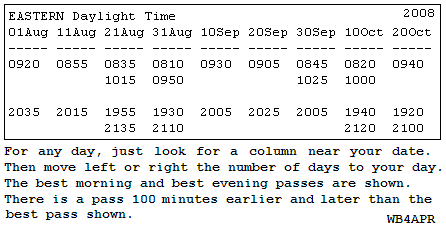
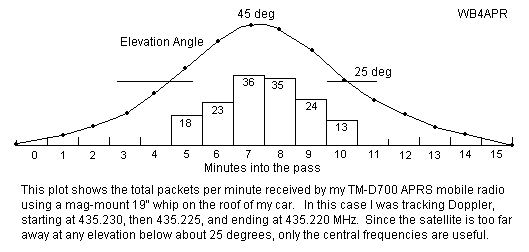

Easy Mobile Satellite Tracking

 US Naval Academy Satellite Lab
US Naval Academy Satellite Lab
Bob Bruninga, WB4APR
Easy Mobile Satellite Tracking

US Naval Academy Satellite Lab
Bob Bruninga, WB4APR
Note:
These timings are for the Northern Hemisphere near about 40N latitude.
There are many FM Amateur satellites that you can work mobile, but the reason you don't
often hear many mobile satellite operations is because of the perceived need
for satellite tracking
predictions for every pass. . But long before we had computers, Amateurs had plenty of
manual and paper methods for satellite predictions that did not require a computer.
Simply stated, you don't need no stinkin' computer, and you don't even need
a PC while mobile. All satellites have very predictable pass times that are very
repeatable.
PSAT2 for example is close to Time synchronous because each pass is only 5 minutes later each day.
But then every other day, a new orbit appears that is 90 minutes earlier. So for almost a week of mobile
operation, you can pretty much know when passes will occur.
The timings above are easy to remember for PSAT. Every pass is 15 minutes earlier every day and for any given day,
the next pass is 1 hour and 40 minutes later.

GO-32 (now inop): Was an ideal example, and was ideal
for Mobile APRS position, status and message communications. . (now currently in-op)
(see operations details).
. For easy Mobile tracking, GO-32 repeats its ground track schedule every 9 days
as shown in the image above.
This allows tracking every pass for months with a simple table as shown below
for your time zone and latitude.

For example, on 4 August you count 3 columns to the right of 1 August, and see that there
is not a good overhead pass that morning, but two lower passes. The first to the east
is at 0810 EDT and the second one, 100 minutes later is 0950 EDT to the west.
. If one pass is shown, then it is nearly overhead and there is a lower pass 100
minutes earlier and later. . If two are shown, then they are both lower and the
ones that are 100 minutes before and after them will not be in range for a mobile.
Your Time Zone Location: .
It is important to visualize where you are located relative to the center of your
time zone. If you are in the eastern edge, then the earlier pass shown or the
prior 100 minute pass will be better for you. If you are to the west of your time
zone, then the later pass will be better for you.
. If you are to the North of your time zone, then the morning pass will be a few minutes
earlier and the evening pass will be a few minutes later.
. If you are to the South, then it will be the opposite.
Most other satellites also have repeating ground tracks or repeating consistent schedules.
Falconsat is a PACSAT BBS satelite but also very easy to work as an APRS digipeater
that can be worked from the mobile.
. As shown above, it also has a repeating ground track which is every 3 days minus about ten minutes.
When the ground track for a satellite repeats every 5 days as did AO-51 Echo, a table like the one above
for GO32 wouild look like this and should be good if updated once every few months.
International Space Station: . There are other patterns for satellites that are
not sun synchronous as those above. . For example, the Space Station has a pass over your
location 23 minutes later each day as shown below. But there is an overall drift earlier
over the long term.
The ground track for the ISS will repeat every other day but because of the
orbit drift, the repeating grond track will be about 51 minutes earlier.
. The two plots below show the two most common ground track patterns for any
given location. . On some days there is an overhead pass with earlier and later
low level passes. On the next day, there are two medium elevation passes but the
earlier and later passes are very low on the horizon.
MANUAL TRACKING: . The point is, all you need is one pass time, and then you can
predict all future and past passes. This is very helpful when you are in the middle
of nowhere without a PC. As long as you know the approximate
time of day for your satellite, all you have to do is monitor the satellite
downlink for an hour and a half and
you are guaranteed to hear a pass. Then for the rest of your trip, you can predict the
future passes based on your general knowledge of the pass geometry and the number of
minutes earlier or later per day.
MOBILE UPLINKS: . It is easy to get into any of these satelites with your 50W
mobile rig and mobile omni antenna. . Two meters for an uplink has a 9 dB advantage
over the typical UHF downlink. . This can actually be a problem for LIDs that talk
without being able to hear their own downlink. DONT DO IT. Others are using the bird
and you are just showing your ignorance by transmitting on top of them without being
able to hear first. . But when you do hear the bird well, you can know that you
should be able to get in.
RECEIVING THE DOWNLINK: . This is where the challenge is. . The UHF downlink suffers
a 9 dB disadvantage compared to VHF and the satellite is only transmitting .5 watts compared
to your 50 watts. . The combination of these adds up to almost 30 dB of difference
or 1000 times stronger uplinks than downlinks. . Fortunately, if you use a 19" vertical
whip in the middle of the roof of your car, it will act like a 3/4 wave antenna on UHF.
.. This gives almost 7 dB gain above 25 degrees where the satellite is also between
6 to 10 dB closer. . So for those middle 3 or 4 minutes of a high elevation pass, the
mobile can be used for satellite contacts.
. The plot below shows how well my vertical 19" whip hears GO32 during the center 1/3rd
of a high elevation pass. Passes below 25 degrees won't decode anything usually.

As shown above, My first test with my D700 and 19" magmount whip on the roof of my car captured about 150
packets over the center 6 minutes of a high elevation pass.
. Of the three passes in the morning and evening, only the center one will be above 30 degrees.
. But, one day out of every 4, there will be two 30 degree passes instead.
. I was tuning for Doppler.
. Without Doppler tuning
my reception window would be about half that shown for the high elevation pass..
Vertical 19" whip OMNI Satellite Antenna: .
A 19.5" two-meter whip antenna over a ground plane not only works perfectly as
an UPLINK antenna, it is also ideal for the UHF downlink. . On the downlink, it
will provide almost 8 dBi of
gain above 30 degrees where the signal is strongest anyway. See the plot below
comparing the gain of a 1/4 wave whip with a 3/4 wave whip. This is live data
obtained from a 1/4 wave and 3/4 wave whip (scaled to GPS size and using the
GPS constellation over 12 hours to provide all-sky signals):
These plots are the same 19" whip over the center of a ground plane. . The VHF
gain is shown in RED and is the typical gain of a 1/4 wave monopole. . But the
green trace is the gain of the same antenna at UHF where it exhibits about 3 dB
gain for a total of almost 8 dBi for hearing the weak UHF downlinks.
Much experimentation in this area is needed. Here is a plot of the theoretical
EZ-NEC produced gains of three whip antennas including the path loss due to range.
. This shows the 3/4 wave antenna to not begin working until above 30 deg, but
I routinely capture some data above 20.... Better than shown here.
Bottom line, whats the best antenna? Depends on how many people are collecting
data from which directions.... There are enough of you and
enough different stations for us to find out!
MOBILE SATELITE OPERATIONS: Now that you konw when the satellites are passing
overhead, it makes it east to do some mobile Satellite operations while you are
stuck there in the traffic jams or out on the open road on a trip.
AZIMUTH-only Tracking with TV rotators:
All present day sateliltes (LEO's) do not need elevation tracking 98% of the time. So foreget the 2% and use a simple $70 TV rotator instead of a $600 AZ/EL tracker which can do 98% as good a job.
See how!
Please see other time zones tables in the USA.


|
|
|